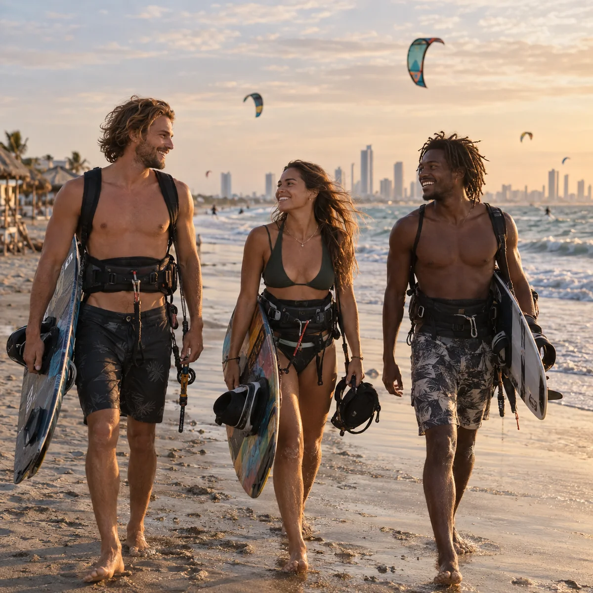
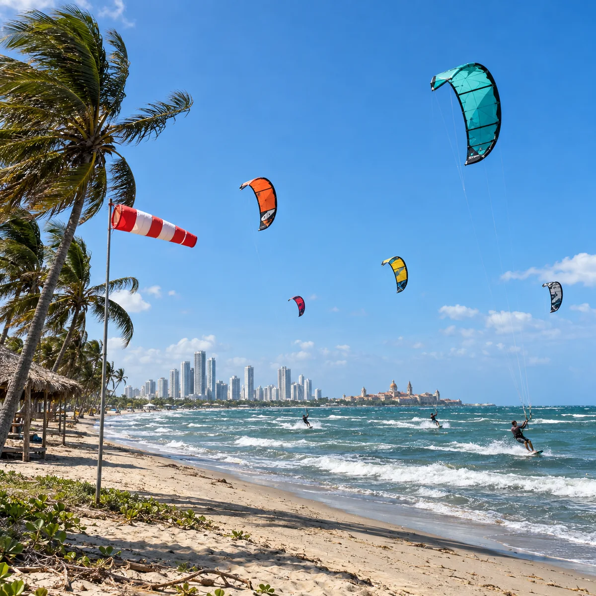
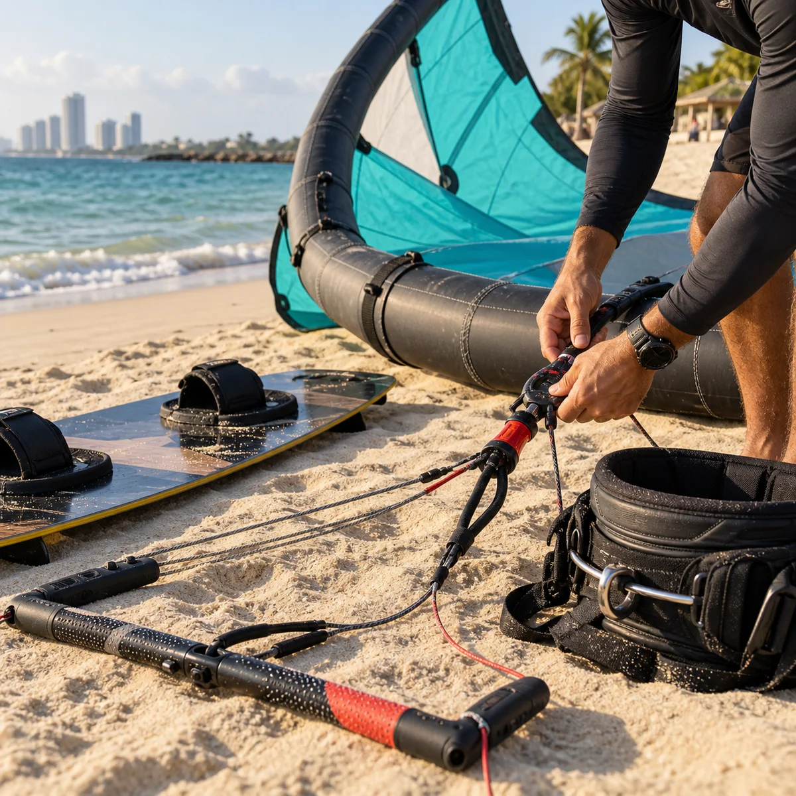
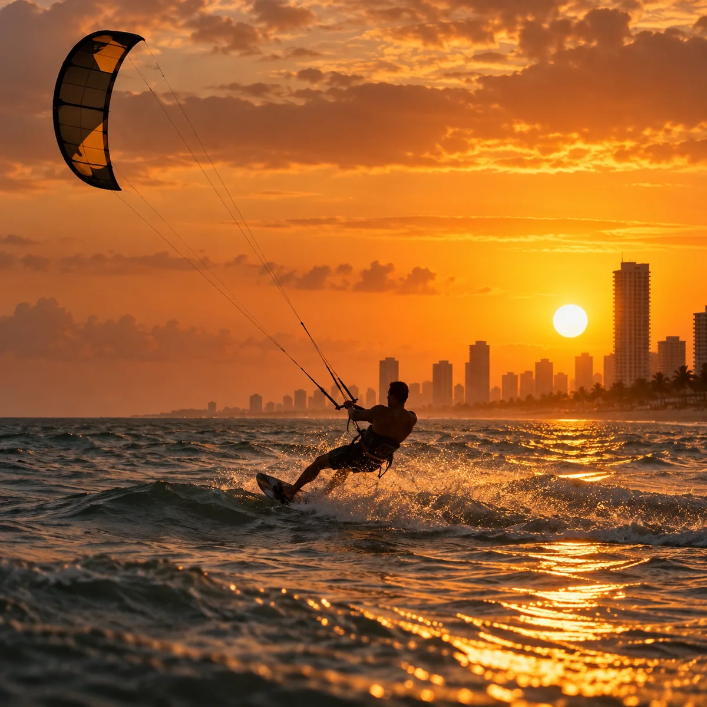
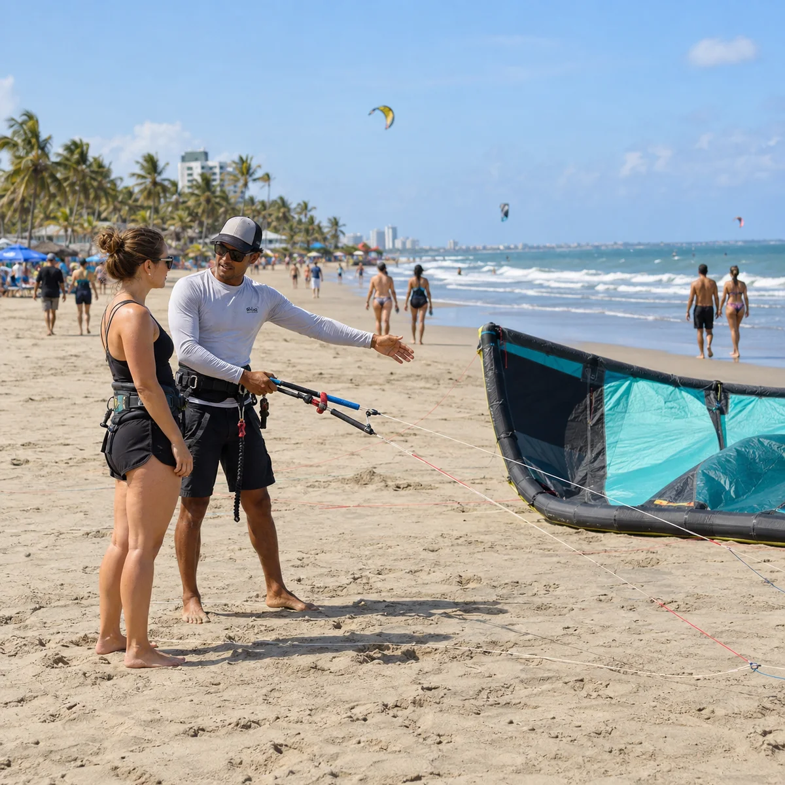
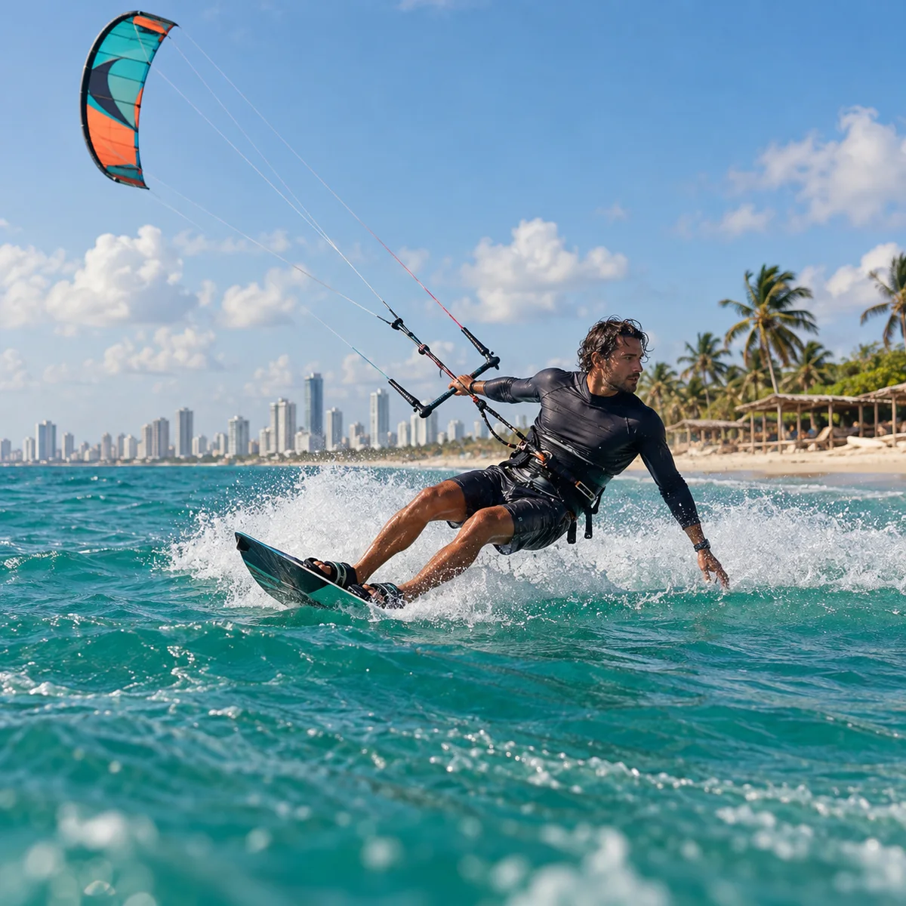

Kite Cartagena
Vista previa del feed inicial. En Instagram las publicaciones nuevas aparecen primero; por eso esta cuadrícula muestra 6–5–4 / 3–2–1.






Vista previa del feed inicial. En Instagram las publicaciones nuevas aparecen primero; por eso esta cuadrícula muestra 6–5–4 / 3–2–1.





